mari
食べる事、寝ること、遊ぶことが大好き。
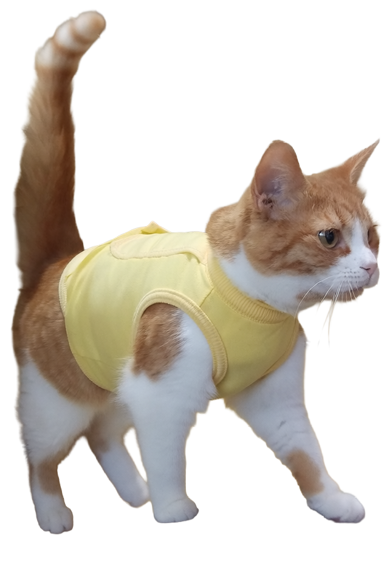
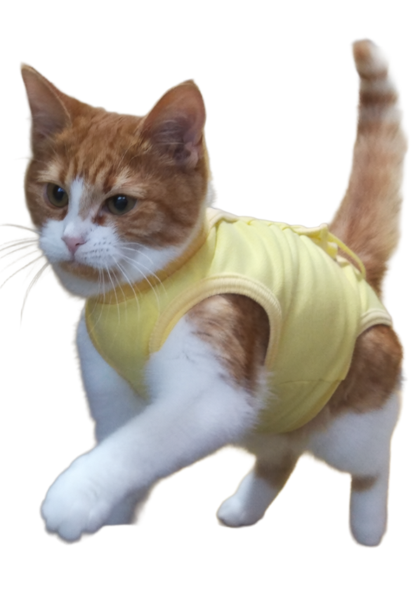
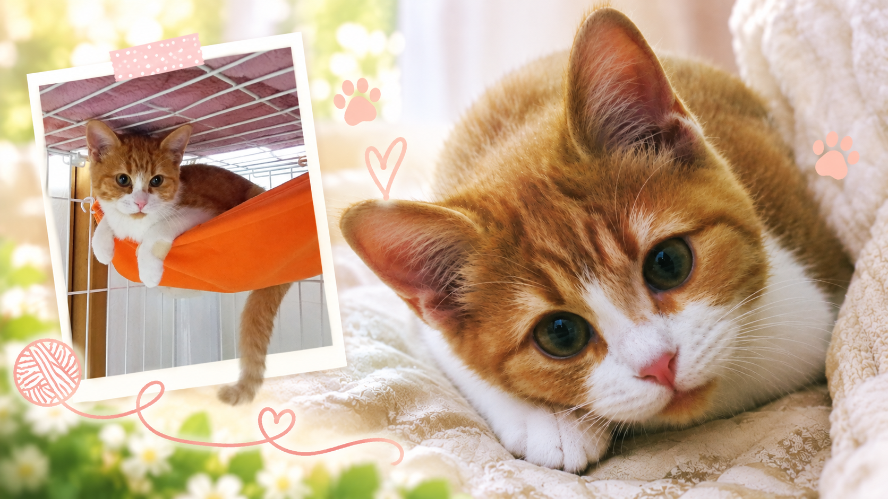
Profile プロフィール
- 名前：
- まり
- ニックネーム：
- まりちゃん
- 性別：
- 女の子
- 誕生日：
- 8月16日
- 年齢：
- 8歳
- 猫種：
- マンチカン
- 毛色：
- オレンジ。はちわれ
- 性格：
- 警戒心が強い。だけど甘えん坊
- チャームポイント：
- すぐにゴロゴロというところ
ちょっぴり甘えん坊だけど、マイペース。
お気に入りの場所ではいつも気持ちよさそうにお昼寝しています。
FAVORITEだいすきなもの
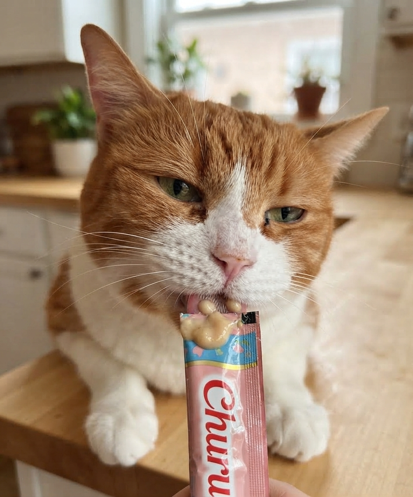
おやつ
ちゅ~るがだいすき♪
おやつを見ると目がかがやきます(⌒∇⌒)
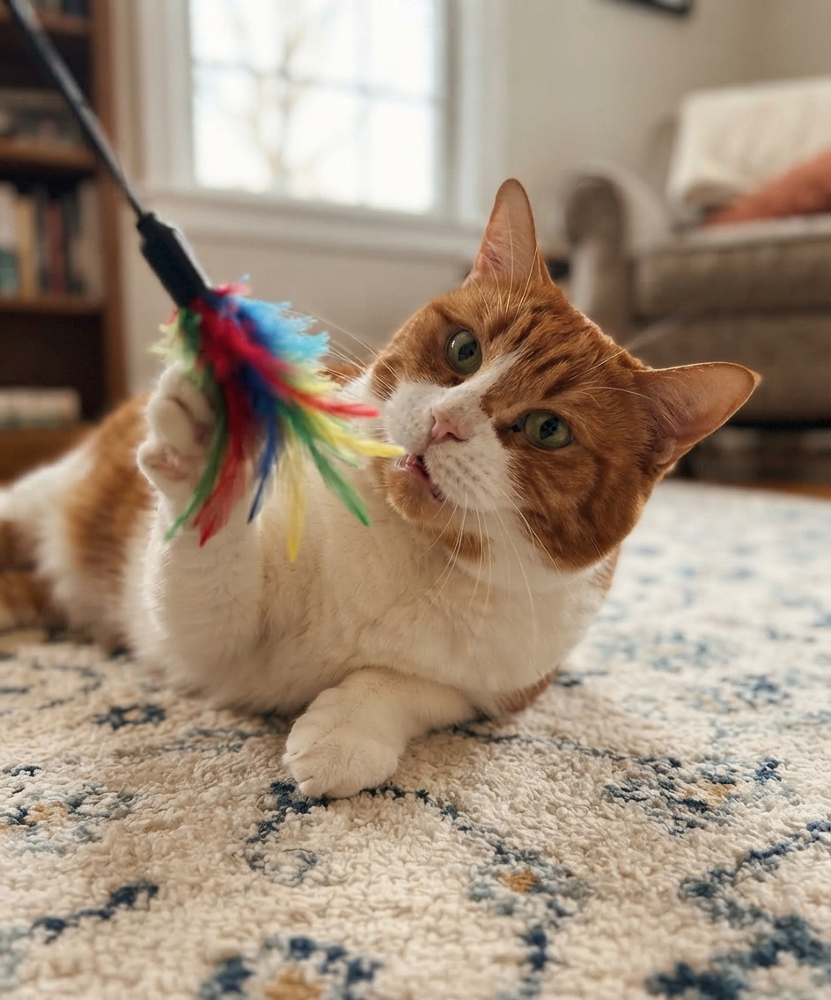
おもちゃ
猫じゃらしを見ると
突然スイッチ・オン！
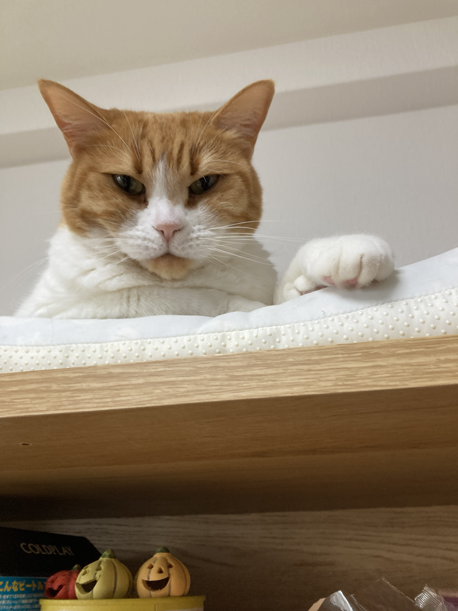
お気に入りの場所
タンスの上がお気に入り。
ゴロゴロしながらのんびり♪
DAILY LIFEまりちゃんの一日
おはよう
朝ごはんの催促、ベットにジャンプ!
「早く起きて~！」
パトロール
毎日の日課。
異常ないか部屋をみてまわります！
お昼寝
お気に入りの場所で、すやすや。
のんびりお昼寝タイムです。
ごはん
本日いちばん楽しみな時間！
ごはんの気配にはとっても敏感です。
夜のパトロール
もう一度、異常がないかチェック！
猫じゃらしを見つけたら、そのまま遊びタイム♪
GALLERYフォトギャラリー
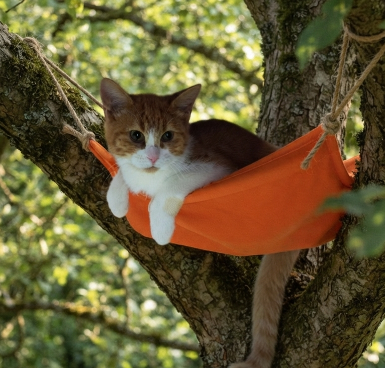
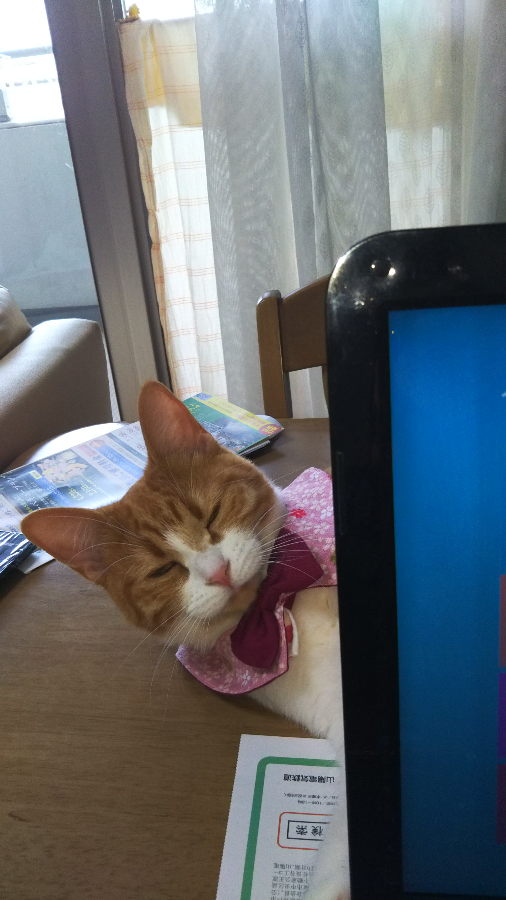
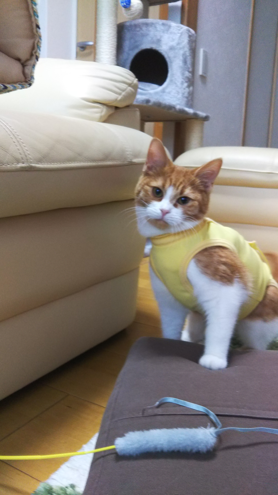
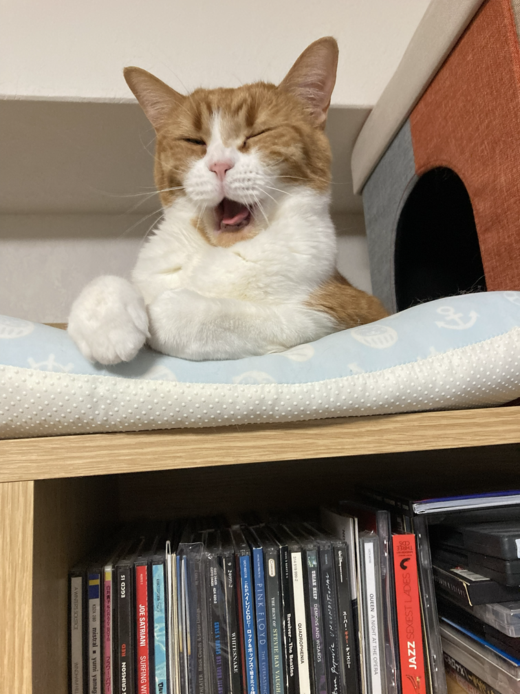
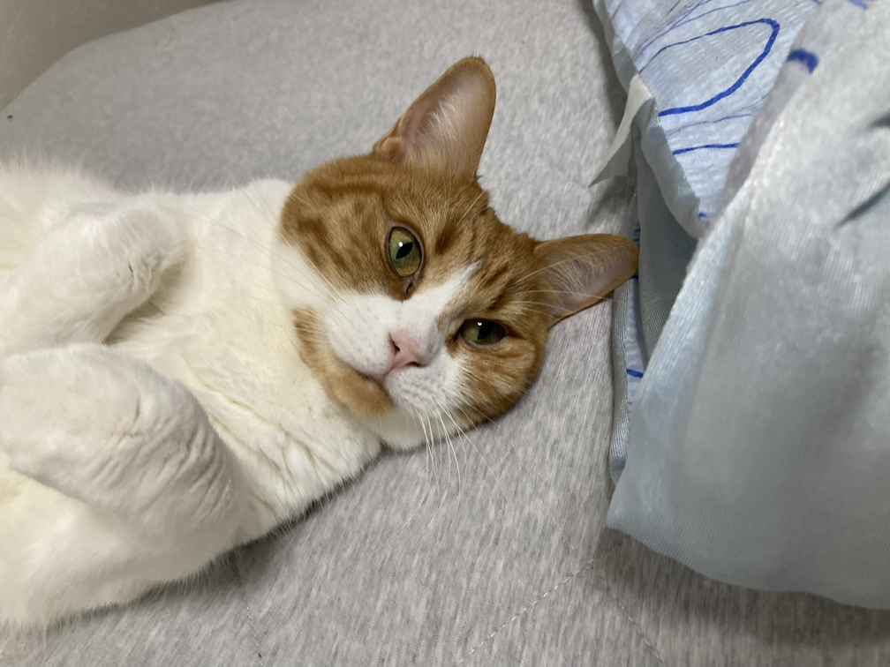
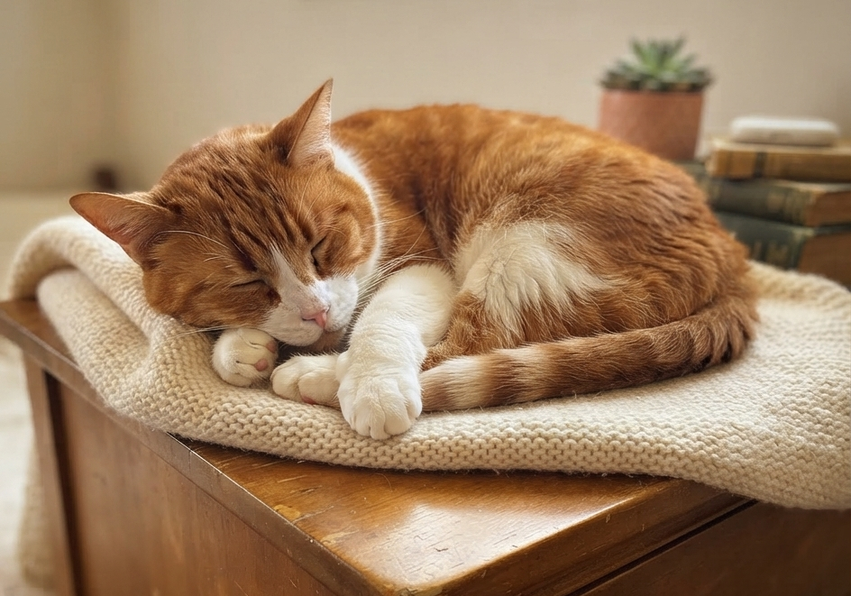
charm-pointまりちゃんのここがすき
寝てる姿が天使
気持ちよさそうにスヤスヤ。
ずっと見ていたくなる寝顔です。
いつも私を監視中
気がつけば、いつもこちらをじーっ。
今日もまりちゃんの監視は続きます。
おなかがすいたら、ひっつき虫
ごはんの時間が近づくと急に甘えん坊。
ぴったりくっついて離れません♪
おもちゃを見ると目がランラン！
猫じゃらしを見つけた瞬間、遊びモードON！
キラキラした目で追いかけます。
MEMORYまりちゃんとの思い出
まりちゃんとの出会い
小さくてかわいいまりちゃん。
わが家での新しい生活が始まりました。
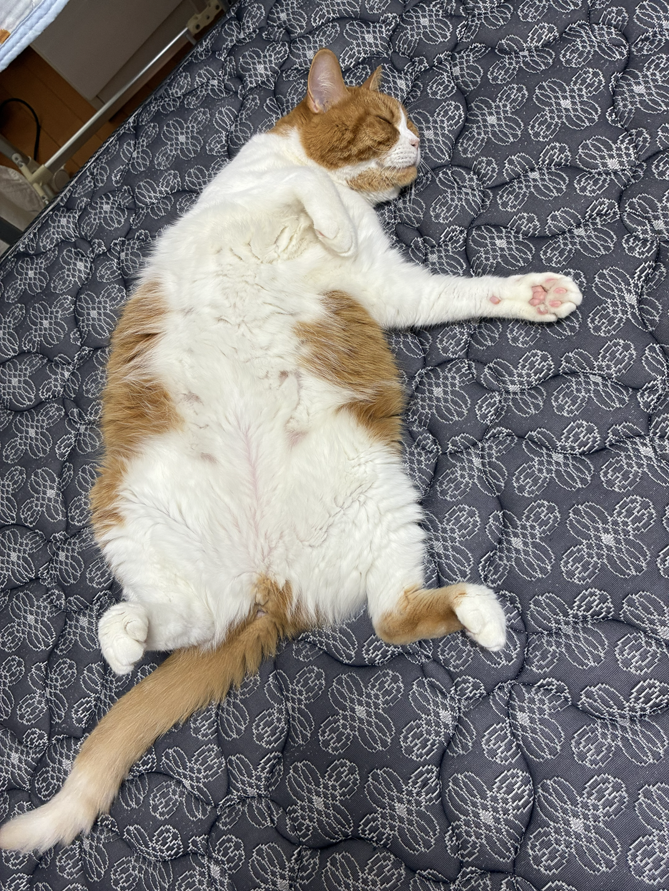
いつもゴロゴロ
お気に入りの場所
本日もゴロゴロしてます。
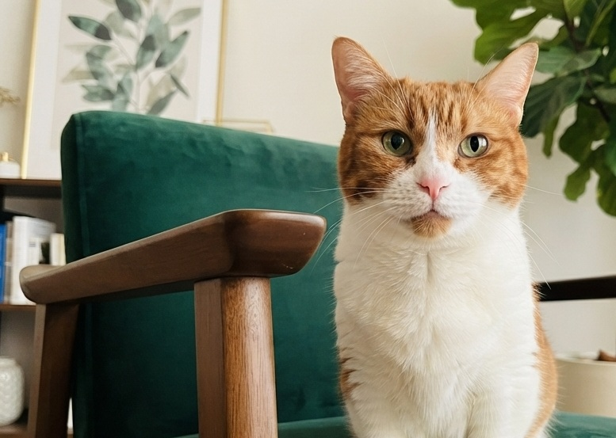
そして現在
甘えん坊でマイペースなのは今も変わらず。
毎日たくさんの癒やしを届けてくれています♪